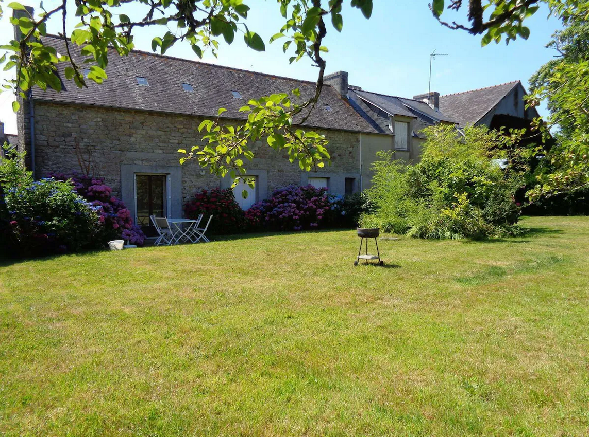
Kerlan Plonivel, 29740
Plobannalec-Lesconil
Coût :
- maison : 2323€20
- draps + linge de toilette : 130€00
- ménage : 170€00
Liaison avec Quimper TGV 🚆
- 🚌 ligne 56C : Quimper (SNCF) - Plobannalec Lesconil, (arrêt Loctudy
Kerizur), 13:15 → 14:15, 17:15 → 18:15 (samedi)
- 🚌 ligne 56C : Plobannalec Lesconil, (arrêt Loctudy Kerizur) -
Quimper (SNCF) - , 09:49 → 10:50, 11:39 → 12:40 (samedi)
Carte du séjour
Voir
en plein écran
- Rouge : 🥾
- Noir : 🚌
- Bleu : ⛵
Autour de Loctudy 🥾
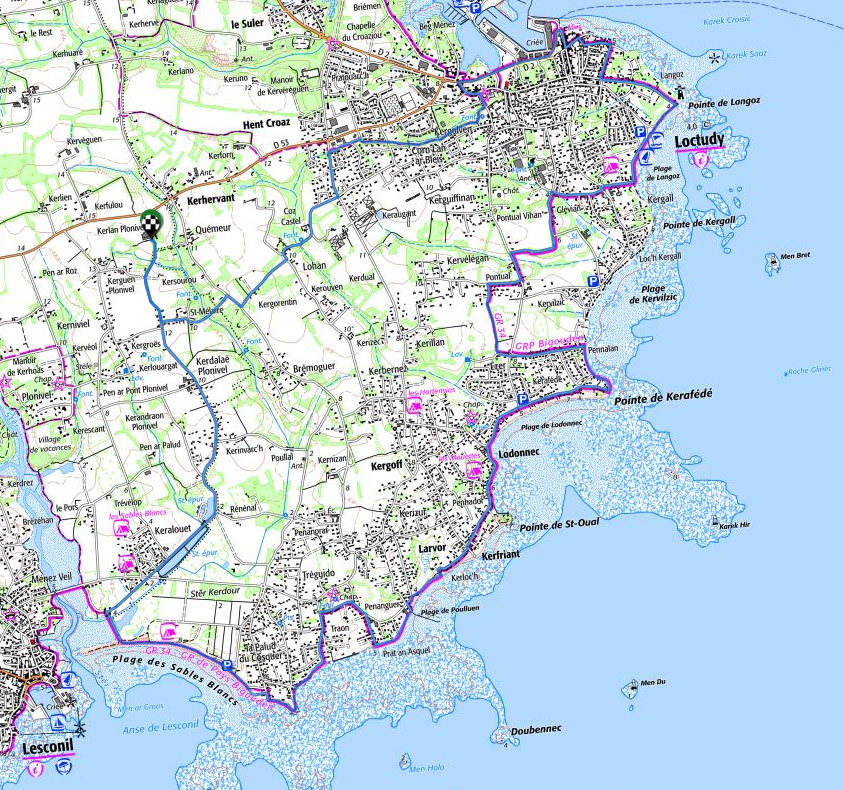
Autour de Loctudy, 🥾 18 km, D+45,
D-45
Entre Eckmül et La Torche 🥾
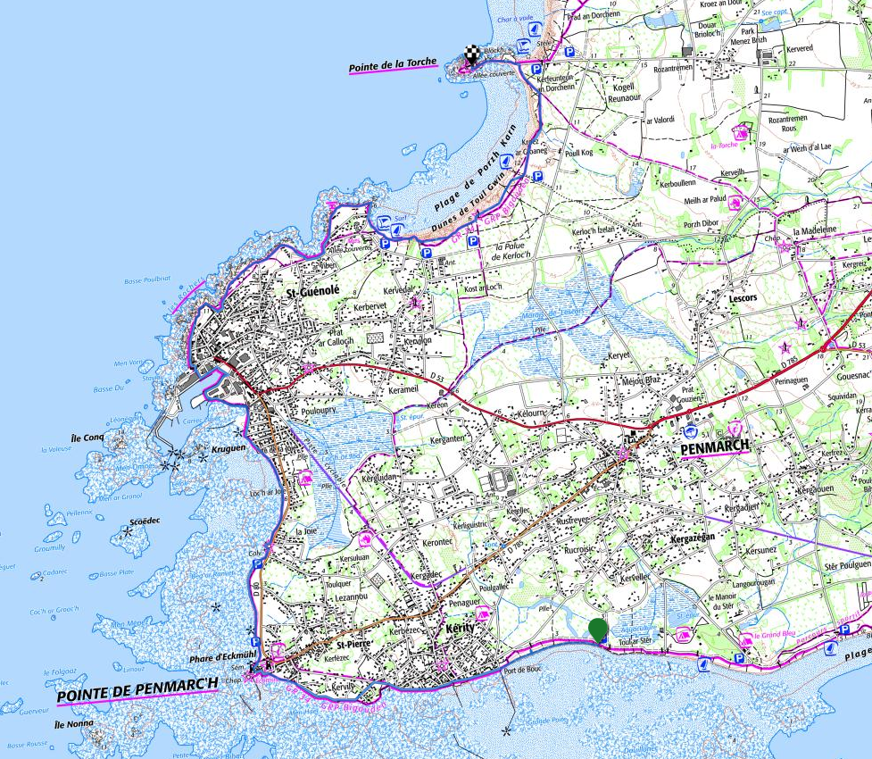
Entre Eckmül et La Torche, 🥾 11 km,
D+27, D-25
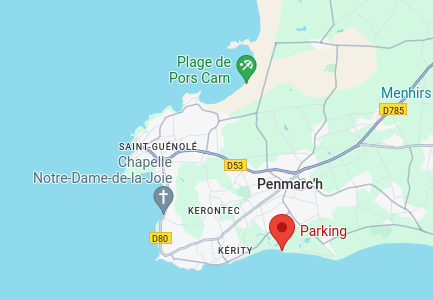
Parking : Rue Théodore Botrel, 29760
Penmarch, 🚗 12.3 km, 17 mn
Retour
- 🚌 ligne 56A, La Torche 17:00 - 17:15 Kerity
- 🥾 10 mn jusqu’à la voiture
- 🚗 18 mn
Depuis Le Guilvinec 🥾
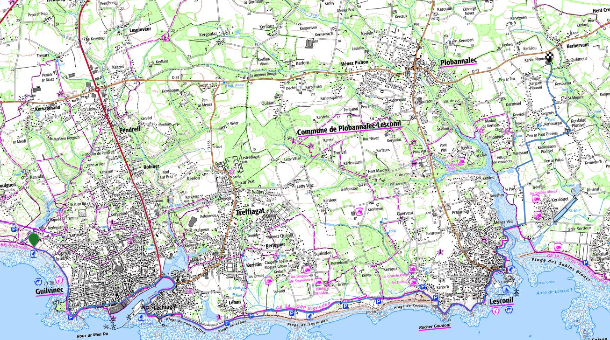
Depuis Le Guilvinec, 🥾 13.5 km, D+43,
D-39
Aller
- 09:45, 🥾 45 mn
- 🚌 ligne 56A, Plobannalec Lesconil Mairie 10:51 - 11:09 Le Guilvinec
Kerleguer
L’Ile-Tudy 🥾
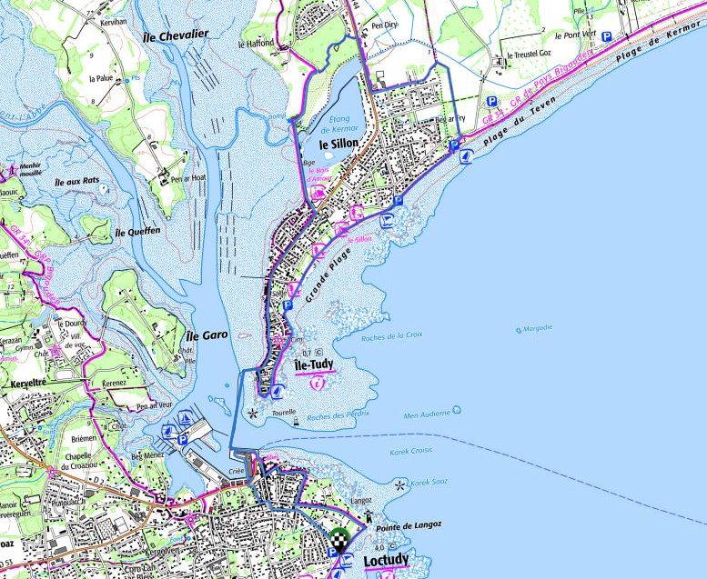
L’Ile-Tudy, 🥾 10.5 km, D+30,
D-30
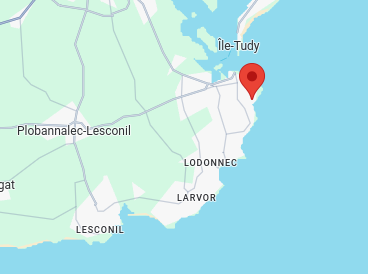
Parking : 24, rue du Casabianca, 29750
Loctudy, 🚗 4 km, 8 mn
- Parcours patrimonial
- Passeur Loctudy - L’Ile Tudy : 02€00
Sainte Marine - Bénodet 🥾
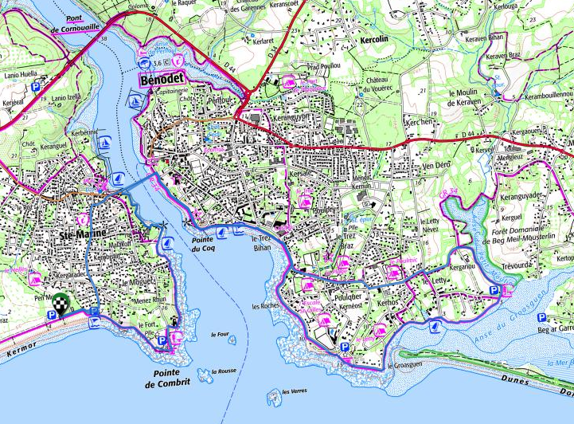
Sainte Marine - Bénodet, 🥾 13 km, D+70,
D-70
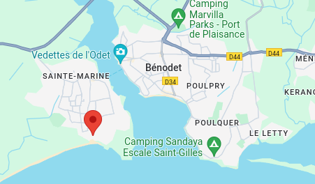
Parking : 1-5 Chem. des Douaniers, 29120
Combrit, 🚗 18 km, 22 mn
Aller
- 09:30 (Bénodet) - 10:30 (Quimper). 09:00 sur place
- Débarquement à Corniguel + 15 mn bus jusqu’au centre ville
Retour
- 16 juillet retour à 15:45 (Quimper) -16:45 (Bénodet)
- 17 juillet retour à 18:15 (Quimper) - 19:15 (Bénodet)
29€00/personne + 3€00 bus
- Départ de Loctudy, 39€00 / personne
- Options
Horaires :
- 10:15 - 17:30 (journée)
- 13:15 - 17:30 (½ journée)
Les marées
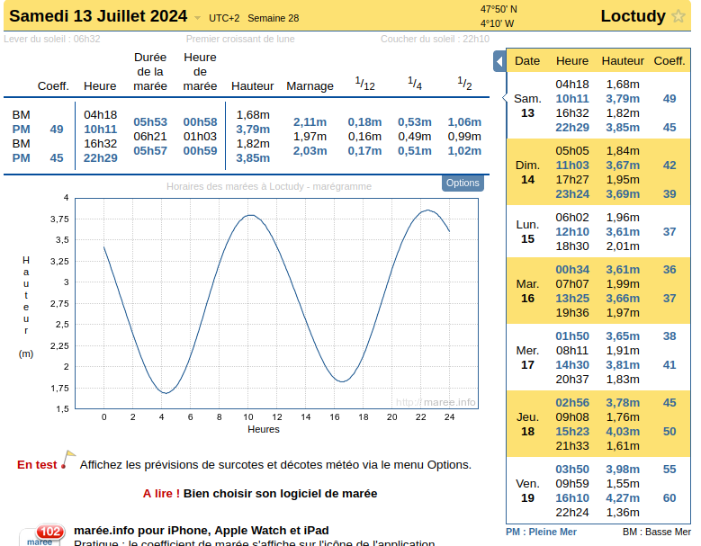
Finances
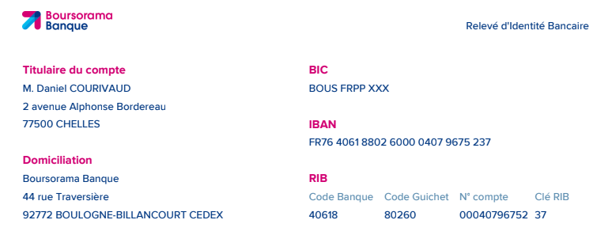
RIB
280€00 / personne.
Le lien
Tricount à coller dans l’appli Android ou iOS.